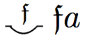

Notes to Frege’s Theorem and Foundations for Arithmetic
1. For those who are curious, the following brief table will give one just a hint as to some of the differences between the modern notation and Frege’s:
| Logical Notion | Modern Notation | Frege-style Notation |
| It is not the case that \(Fx\) | \(\neg Fx\) |
|
| If \(Fx\) then \(Gy\) | \(Fx\rightarrow Gy\) | |
| Every \(x\) is such that \(Fx\) | \(\forall x Fx\) | |
| Some \(x\) is such that \(Fx\) | \(\neg\forall x\neg Fx\), i.e., \(\exists x Fx\) | |
| Every \(F\) is such that \(Fa\) | \(\forall F \, Fa\) |  |
| Some \(F\) is such that \(Fa\) | \(\neg\forall F\neg Fa, i.e., \exists F \, Fa\) |
So, for example, whereas a modern logician would symbolize the claim ‘All \(A\)s are \(B\)s’ as:
\(\forall x(Ax\rightarrow Bx)\)
Frege would symbolize this claim as follows:
For a more complete description of Frege’s notation, see R. Cook’s Appendix (“How to Read Grundgesetze”) in the Ebert, Rossberg, and Wright translation of Frege 1893/1903, Reck & Awodey (2004, 26–34), Beaney (1997, Appendix 2), Furth (1967).
2. For those who would like a strictly faithful understanding of Frege’s definition of membership in Gg I, §34, a more exact representation would be to use the definite description operator \(\iota\) and to cast Frege’s definition as follows, where the symbol \(\in\) replaces Frege’s symbol \(\frown\) and where \(G\) is any unary function symbol:
\(x\in y \eqdef \iota\alpha\exists G (y\eqclose \epsilon G \, \amp\, G(x)\! =\! \alpha )\)
What’s being defined here is the value of the function \(x\in y\). And Frege defines it as: the object \(\alpha\) such that there exists a function \(G\) for which \(y\) is the course-of-values for \(G\) and \(\alpha\) is the value of \(G\) for the argument \(x\). If we restrict this definition to those functions that are concepts, (a) the course of values \(y\) becomes an extension of a concept, and (b) the object \(\alpha\) in Frege’s definiens is a truth value and, indeed, signifies the truth-value The True when \(x\) falls under the concept \(G\). So the claim \(G(x) = \alpha\) in Frege’s definition can be represented by the predication \(Gx\). That means the variable \(\alpha\) is no longer needed and so we can transform Frege’s term definition that identifies the value of the denoting term ‘\(x\in y\)’ to a formula definition that gives truth conditions for the formula ‘\(x \in y\)’. We eliminate the variable-binding description operator and the variable \(\alpha\) from Frege’s definiens, so that the definiens in Frege’s definition now becomes:
\(x\in y \eqdef \exists G (y\eqclose \epsilon G \amp G(x))\)
In other words, \(x\) is an element of \(y\) if and only if \(y\) is the extension of some concept \(G\) such that \(Gx\). And this is the definition we’ve used in the text.
3. These models of second-order logic with a Comprehension Principle for Concepts are called ‘general models’ (as opposed to ‘standard’ models in which the domain of concepts is taken to be the power set of the domain of objects). These general models exploit the fact that there are only a denumerably infinite number of conditions on objects expressible in the language and hence, only a denumerably infinite number of instances of comprehension. These general models include in the domain of concepts only enough concepts to make these instances of comprehension true. Thus, only a denumerably infinite number of concepts are required, even if the domain of objects is denumerably infinite. So we emphasize that it is the interaction of the Comprehension Principle for Concepts with Vb that engenders the paradox.
4. It is important to note here that Frege’s definitions of the membership relation and the notion of equinumerosity require a second-order language, since both definitions involve quantification over concepts.
5. The reason this is weaker than Frege’s definition is that his definition of equinumerosity requires any witness \(R\) to the equinumerosity of F and G to be (globally) functional and one-to-one, where:
- \(R\) is functional \(\eqdef\) \(\forall x\forall y\forall z (Rxy \amp Rxz \to y=z)\)
- \(R\) is one-to-one \(\eqdef\) \(\forall x\forall y\forall z (Rxz \amp Ryz \to x=y)\)
That is, in Gl (§§71, 72), Frege says that F and G are equinumerous just in case:
R is functional & R is one-to-one &
\(\forall x(Fx \to \exists y(Gy \amp Rxy)) \amp \forall y(Gy \to \exists x(Fx \amp Rxy)) \)
This is stronger than the definition of equinumerosity we’ve given in the text. The definition we’ve given doesn’t require \(R\) to be functional generally; R might fail to be functional with respect to any non-\(F\) objects it might relate to other things. For example, if a is a non-F object and b and c are distinct non-G objects, then R can witness the equinumerosity of F and G in the sense that we’ve defined in the text even though R relates the non-F object a to both the non-G objects b and c. But that is ruled out by Frege’s definition.
Similarly, the definition we’ve given doesn’t require \(R\) to be one-to-one generally; R might fail to be one-to-one with respect to any non-\(G\) objects to which other things are R-related. For example, if a and b are distinct non-F objects and c is a non-G object, then R can witness the equinumerosity of F and G in the sense that we’ve defined in the text even though R relates both the non-F objects a and b to the non-G object c. But that is ruled out by Frege’s definition.
It seems that neither Frege’s derivation of Hume’s Principle from Basic Law V nor his derivation of the Dedekind-Peano axioms from Hume’s Principle require R to be functional and one-to-one generally. A relation R does indeed correlate F and G one-to-one if it satisfies the definition of equinumerosity in the text while failing to be globally functional and one-to-one. So equinumerosity, as we’ve defined it, is sufficient to partition the domain of properties into equivalence classes, each of which contains all and only those properties with the same number of objects falling under them. That is essential to the proof of Frege’s Theorem and hence the exegesis here is simplified.
6. Frege doesn’t call this principle ‘Hume’s Principle’ in his own writings. The label was instead introduced in Boolos (1987). Frege does cite Hume when he introduced this principle in Gl. In Gl, §63, he quotes Hume’s Treatise (I, iii, 1):
When two numbers are so combined as that one has always an unite answering to every unite of the other, we pronounce them equal.
The idea in Hume does bear some resemblance to the principle Frege constructs, and so we shall continue to use Boolos’ label for this principle.
7. We call this an implicit or contextual definition rather than an explicit definition because the notation \(\#F\) can only be eliminated when it appears in a context of the form ‘\(\#F = \#G\)’. By contrast, an explicit definition would take the form:
\(\#F \eqdef\) the object \(x\) such that \(\phi(x,F)\),
where \(\phi (x,F)\) is some condition on \(x\) and \(F\). This would allow us to eliminate the \(\#F\) no matter what context it appears in. We shall examine Frege’s attempt to give such a definition momentarily.
The reader might also find the following observation by W. Demopoulos useful (from an early draft of Demopoulos and Clark 2005):
Frege’s contextual definition (i.e., Hume’s Principle) is not ‘conservative’ over the language \(L = {0, S, N}\) of second order arithmetic. (It is not conservative because it allows one to prove statements that are otherwise unprovable using this language and second-order logic alone. A proper, explicit definition only introduces simplifying notation – the new theorems formulable with the new notation introduced by an explicit definition would still have been provable had the new notation been eliminated in terms of primitive notation. As such, explicit definitions are conservative.) Indeed, the contextual definition allows for the proof both of the infinity of the sequence of natural numbers and of the existence of an infinite cardinal (which Frege called ‘endlos’ in Gl).
8. The reader might find the following observation in Demopoulos and Clark 2005 (135–135) useful:
The characterization ‘Frege-Russell’ slurs over the fact that for Russell, the number associated with a set (concept of first level) is an entity of higher type than the set itself. Beginning with individuals – entities of lowest type – we proceed first to sets of individuals and then to classes of such sets (corresponding to Frege’s concepts of second level). For Russell, numbers, being classes, are of higher type than sets. But for Frege, extensions, and therefore numbers, belong to the totality of objects whatever the level of concept with which they are associated. Thus, while Russell and Frege both subscribe to some version of Hume’s Principle, their conceptions of the logical form of the cardinality operator, and therefore, that of the principle itself, are quite different: the operator is type raising for Russell [since it takes us from a set to a class], and type lowering for Frege [since it takes a concept (set) to an object (individual)]. This difference is fundamental, since it enables Frege to establish – on the basis of Hume’s principle – those of the Peano-Dedekind axioms of arithmetic which assert that the system of natural numbers is Dedekind infinite. By contrast, when the cardinality operator is type raising, Hume’s principle is rather weak, allowing for models of every finite power.
9. The higher-order version of the Law of Extensions asserts that a concept G is a member of the extension of the second-order concept concept equinumerous to F iff \(G\) is equinumerous to \(F\). If we temporarily suppose that we can have higher-order \(\lambda\)-expressions of the form \([\lambda H \, H\apprxclose F]\), then we could represent the extension of the second-order concept just described as:
\(\epsilon[\lambda H\, H\apprxclose F]\)
Then, the higher-order law of extensions would be formalizable as follows:
\(G \in \epsilon[\lambda H\, H\apprxclose F] \equivwide G\apprxclose F\)
This principle is used implicitly on several occasions in the derivation of Hume’s Principle in Gl. Those readers who read the material on the derivation of Hume’s Principle in Gg will see that this principle gets reformulated as the Lemma to the Proof of Hume’s Principle.
10. Strictly speaking, we should represent this concept as follows:
\([\lambda z \, [\lambda y \, Ayp]z \amp z\neq r]\)
But we have applied the following instance of \(\lambda\)-Conversion to the first conjunct within the matrix of the \(\lambda\)-expression:
\([\lambda y \, Ayp]z\equiv Azp\)
We thereby simplify the entire expression to:
\([\lambda z \, Azp\amp z\neq r]\)
11. The Facts numbered 3, 4, 5, and 6 correspond to Theorems 123, 124, 128, and 129, respectively, in Gg I. Facts 1, 5, and 7 correspond to Propositions 91, 84, and 98, respectively, in Part III of Begr.
12. Readers interested in seeing how our theorems correspond to Frege’s will find it instructive to see how Fact 3 corresponds to Frege’s Theorem 123, which is (Gg. I, p. 138):
First, let’s simplify the notation for relations in Frege’s theorem 123. Since our notation \(Rxy\) corresponds to his
and our notation \(R^{*}(x,y)\) corresponds to his:

we may substitute them into Frege’s theorem, to get a formula that looks like this:
Now if we eliminate Frege’s notation for universally quantified conditional claims, we get:
And if we use normal variables instead of the Fraktur variables and replace \(F(x)\) by \(Fx\), we get:
Consider the 3rd line from the top in the above. Since \(\forall x(Fx\rightarrow\forall y(Rxy \rightarrow Fy))\) is equivalent to \(\forall x\forall y(Fx\rightarrow (Rxy \rightarrow Fy))\), which is equivalent to \(\forall x\forall y(Rxy\rightarrow (Fx \rightarrow Fy))\), we may use our abbreviation of the latter formula, namely \(\mathit{Her}(F,R)\), to get:
Translating the above conditional into modern notation yields:
\(R^{*}(a,b)\rightarrow(\mathit{Her}(F,R)\rightarrow (\forall z(Raz\rightarrow Fz)\rightarrow (Fb)))\)
Now if we gather the 3 antecedents of the conditionals into a conjunction, we get the equivalent formula:
\([R^{*}(a,b)\amp \mathit{Her}(F,R)\amp \forall z(Raz\rightarrow Fz)]\rightarrow Fb\)
Finally, if we switch the 2nd and 3rd conjuncts in the antecedent, and replace ‘\(a\)’ by ‘\(x\)’ and replace ‘\(b\)’ by ‘\(y\)’, we get:
\([R^{*}(x,y)\amp \forall z(Rxz\rightarrow Fz)\amp \mathit{Her}(F,R)]\rightarrow Fy\)
And this is our Fact 3.
13. Facts 2, 3, 6, and 7 correspond to Theorems 132, 134, 141, and 144, respectively, in Gg I.
14. A relation \(R\) is one-to-one (‘R is 1-1’) just in case it satisfies the following condition:
\(Rxz\amp Ryz\rightarrow x=y\)
So Fact 8 in the text is a fact about the weak ancestral whenever the relation R in question is 1-1. We shall prove that the Predecessor relation is 1-1 in the third subsection of Section 5. Then Fact 8 and the fact that Predecessor is 1-1 will both play a crucial role in the proof that every number has a successor.
To prove Fact 8, assume that \(R^{*}(a,b), Rcb\) and that \(R\) is 1-1. We want to show \(R^{+}(a,c)\). Now by Fact 5 concerning the weak ancestral, we know that it follows from \(R^{*}(a,b)\) that \(\exists z[R^{+}(a,z)\amp Rzb]\). So call an arbitrary such object ‘\(d\)’. So we know \(R^{+}(a,d)\amp Rdb\). Now since \(R\) is 1-1, it follows from \(Rdb\) and \(Rcb\), that \(c=d\). So, \(R^{+}(a,c)\), which is what we had to show.
15. See the work by Wright cited in the Bibliography for a defense of something like this position. Wright justifies this position on Fregean grounds by appealing to Frege’s Context Principle, which asserts that a word has no meaning (reference) except in the context of a proposition (truth).
16. See Rosen 1993 for a discussion of how someone might claim that the right-hand condition of an instance might imply its corresponding left-hand condition.
17. Again, see the work by Wright cited in the Bibliography.
18. In the long footnote to §10, Frege seems to suggest that the idea of replacing the truth values with their unit classes cannot be extended to the case of every object in the domain without conflicting with his earlier stipulations (in Gg I, §§3, 9 and 20), and in particular, with Basic Law V.
19. Wehmeier (1999) shows that Frege would not have had much luck attempting to restrict the quantifiers of Gg to extensions. He considers two consistent subsytems that Frege might have adopted to avoid the contradiction, namely, the system H described in Heck (1996) and the system Wehmeier himself developed and labels \(T_{\Delta}\). Both of these systems retain Basic Law V but place restrictions on the Comprehension Principle for Concepts. However, both systems imply the existence of objects which are not extensions (or courses-of-values), and indeed, they imply an infinite number of such objects.